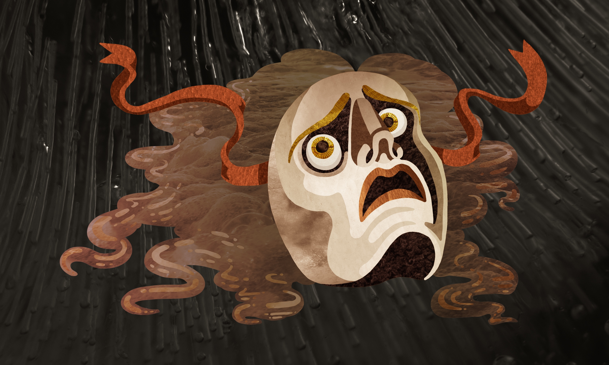

Illustration by Irin MacLeod
Madness is rare among individuals - but among groups, parties, peoples, and ages it is the rule: - and therefore the historians rarely speak of madness. But at some time the physicians shall write history.
Nietzsche, Nachlass VII-1.72
1.
I won’t seek to prove something which any qualified reader knew long ago: the COVID crisis is a case of mass hysteria. The virus itself is very real but the pretense of fear surrounding it is histrionic, unconsciously strategic, and more demonstrative than genuine. An extremely virulent but nondeadly respiratory nuisance, a profound attachment to the fiction of a deadly pandemic, an enormous flood of misinformation, an extremely dangerous set of legal precedents, an encircling crowd of jackal-eyed economic and political opportunists, but never once a genuine threat to the collective human health on its own: yet out of all these minor disasters, I find the most pernicious element of COVID is the willful ignorance concerning the underlying reason for the hysteria. But willful ignorance is precisely one of the symptoms of hysteria: we would rather not know why, or pretend we don’t.
But I believe the answer is very clear. So omnipresent is this cause that we cannot see it because we swim through it, we breathe it, we take it for granted: repressed aggression caused COVID hysteria.
In speaking of the high value of certain case studies, the pioneering psychologist Josef Breuer once pointed out that although the bizarrely beautiful sea urchin may not hold such an important place in zoology, because its eggs are transparent it holds a critical place in the history of embryology. In the same way I hope to show that although I believe COVID and the year 2020 will in the end be only another baffling footnote in the long history of human error, COVID is a transparent egg containing the embryo of something we need desperately to analyze: what I will describe as mass aggressigenic hysteria.
But why listen to a “psychologist”?
2.
What is “mass hysteria”? This term is tossed around on the Internet like a deflated beach ball no one understands how to properly use. Most often it seems to stand for “unreasonable fear” and nothing more. But hysteria has a definite, discernible, and well-researched formula: where is this knowledge now that we need it? Those most to blame for this are the representatives of mainstream academic psychology and psychiatry: they have buried all real psychological insight beneath a tidal wave of nauseating moral posturing and political agenda, which is suspiciously antagonistic toward the psychological analysis of hysteria in particular.
Therefore before I begin in earnest, some housecleaning is in order.
That psychiatrists believe they are masters of psychology because they have access to an arsenal of brutally efficacious drugs, is like a man who believes he knows everything worth knowing about trees because he possesses a chainsaw. He neither designs nor constructs nor understands a chainsaw, but when the tree falls noisily he feels this confirms his mastery.
Psychiatry and academic psychology essentially practices shallow pop psychology alongside largely fraudulent statistical fiddling. They manipulate numbers gained from naive and dimwitted quantization methods designed to confirm either a fashionable sociopolitical agenda in order to secure university funding, or preferably to prove the efficacy of whatever latest lucrative molecular monstrosity the pharmaceutical boys have cooked up.
It makes about as much sense for someone genuinely interested in the art and science of psychology to listen to the psychiatrists and PhDs, as it would for someone interested in healthy diet to visit an oil rig because so much of our food is now derived from petroleum.
Therefore why should anyone interested in the etiology of the COVID nonsense consult anyone who calls himself a psychologist? The gleeful complicity of our psychologists in a variety of athletic Orwellian distortions along the course of the COVID farce is comparable only to the reprehensibility of epidemiologists, who have blithely and with open eyes changed the foundational definitions of their science to match the prevailing winds of flatus called political consensus.
My answer: because a genuinely incisive psychology is our best weapon in an undeclared ideological war. There is a discernible thirst for the persecution of the heretical and uncooperative afoot: expensive civil liberties are being trampled and discarded like moldy fruit… We must not allow the heritage of Western psychological insight to be another occupied territory of blind and shallow political opportunism.
Axiomatic beginnings
3.
There are a few theoretical prerequisites to the practice of any decent 21st century psychology and anthropology, which are beyond the scope of this article to prove:
- Unconscious mechanics are very real and generally more determinative than conscious thinking.
- Repression is an essential feature of sociality.
- Human beings are aggressive creatures. The most successful predator of the last 100,000 years has not suddenly lost this quality, despite our recent pretenses to nonviolence.
- As civilizational forces mount and multiply, aggression is increasingly repressed: this repression has serious consequences.
COVID hysteria is not psychosomatic conversion
4.
The mainstream consensus on mass hysteria is skewed toward a relatively minor syndrome which is easier to document, easier to dismiss as delusional, and thus does not threaten the moral norm. 21st century psychologists will generally only speak of “mass psychogenic illness”. But “psychogenic” is a willfully stupid and evasive term. Everything in psychology is “psychogenic” else it’s not the domain of psychology, and everything not an illness is not interesting. This is equivalent to saying “contagious crazies” and intentionally obfuscates the history and depth of early 20th century thinking concerning hysteria.
What they really mean is mass conversion hysteria: this is the case of a psychosomatic symptom of disease spreading quickly through a uniform population: homogeneous groups of women and children under stress are known to be especially susceptible - thus its historical frequency in factories and schools. The famous “June Bug Epidemic” among overworked women in a dressmaking factory during peak production in 1962 serves as example. “Conversion” here means the conversion of some repressed impulse into a delusional symptom along a socially accepted trajectory: thus “conversion hysteria” is the best of the accepted terminology because it indicates its own heritage in the vital Freudian concept of Verschiebung, or displacement - which I’ll discuss shortly.
But do not misunderstand me: COVID hysteria is not and never was primarily driven by anything like conversion hysteria. Despite its value as a diagnostic, mass conversion hysteria is a rare, temporary, and relatively harmless phenomenon. But with COVID we are dealing with a mass hysteria manifested in ideological, moral, and governmental terms, not short-lived nocebo effects. In order to analyze it we must turn to the older conception of what is properly termed anxiety hysteria.
The Freudian mechanics of hysteria
5.
The study of hysteria lies right at the heart of the best achievements of early 20th century psychology: this is a fact much obscured now by the armies of psychiatric pillpushers and academic yesmen, but the study of hysteria was the key to the discovery of unconscious mechanics, the knowledge of which all of us utilize in our speech and manner of thinking every day, whether we know it or not. Start a heated argument with almost any half-educated bloke, and eventually Freudian terms will be lobbed back and forth like greasy grenades: “You’re just projecting! That’s egocentric! You’re so anal!” Freud is anathema, both sacred and forbidden: simultaneously enthroned via the implicit use of his vocabulary and excommunicated from contemporary science wherever possible.
We must return to this forbidden source in order to understand what hysteria is. Therefore allow me to immediately alienate the biomedical establishment and disqualify myself in their eyes - I will quote the master in these matters. Freud is describing here how anxiety hysteria works:
Die fliehende Besetzung wendete sich einer Ersatzvorstellung zu, die einerseits assoziativ mit der abgewiesenen Vorstellung zusammenhing, anderseits durch die Entfernung von ihr der Verdrängung entzogen war (Verschiebungsersatz) und eine Rationalisierung der noch unhemmbaren Angstentwicklung gestattete. Die Ersatzvorstellung spielt nun für das System Bw die Rolle einer Gegenbesetzung, indem sie es gegen das Auftauchen der verdrängten Vorstellung im Bw versichert, anderseits ist sie die Ausgangsstelle der nun erst recht unhemmbaren Angstaffektentbindung oder benimmt sich als solche.
The retreating energetic investment devotes itself to a substitutive idea which, on the one hand, is connected by association with the rejected idea, and on the other, has escaped repression by reason of its remoteness from that idea - as Verschiebungsersatz, a “displacing substitute” - and permits the still uninhibitable development of anxiety to be rationalized. The substitute idea now plays the part of an energetic uninvestment for the conscious system, by securing it against an emergence in consciousness of the repressed content. On the other hand it is, or acts as if it were, the point of departure for the release of the affect of anxiety, which has now really become quite uninhibitable.
Das Unbewusste, §IV
I include the original to remind the reader that this is a translation. Let’s analyze these terms singly:
“Energetic investment” refers to what is badly translated as “cathexis” elsewhere: this means simply the perceptual target of any given instinct, often enough another person as in the case of sexual desire or aggression.
“Displacing substitute”: the insight here is that any given object of an instinctual urge can be displaced by another when social pressures demand it: but the original ideational content does not disappear, it is repressed. This is what it means when we say that someone is “anal” or “obsessed”: they employ some seemingly meaningless activity such as repetitive hand-washing, to gratify some other urge, the content of which is repressed and yet deeply connected to the substitute.
At this point I must insist the reader learn a little German - it won’t hurt as much as it seems. Verschiebungsersatz I translate literally as “displacing substitute”: Verschiebung can be quickly understood in English as “shoving away”, schieben having the same root as “shove”. Ersatz is already common in English and means simply “replacement”, with a similar morphological structure as the Latinate “re-place”. Therefore Verschiebungsersatz is “a substitute that displaces”: Freudian vocabulary was always straightforward and should never be obfuscated with exotic jargon - that is part of its original evocative power.
Finally, it’s important to note that in this short passage Freud also manages to touch upon the essence of the hysterical symptom: the rationalization of anxiety. This is generally what everyone already understands about hysteria and all histrionic neurosis - that the fuss and bother must really be about something else. To clarify this common knowledge is my aim here.
6.
This “substitutive idea” plays two roles simultaneously: the role of a repressive force, by obscuring awareness of the true cause even while hinting at it, and a rationalized vector for the release of anxiety behaviors. One of the most important Freudian insights is that every displacement can be traced along discernible semantic lines: the substitute target is never completely arbitrary, and it only takes a little practice in the art of untangling semantic valence to learn to detect the clues leading backward to the original impulse.
Hysteria is the exemplum magnum of the mechanism of displacement and its analysis constitutes therefore the core of 20th century psychological insight - what is now called “conversion disorder” is in fact the last stump of Freudian thinking the psychiatrists have not managed to uproot, so stubborn and obvious is hysteria in telling us that some unconscious sleight-of-hand is going on. Sometimes it seems that the riddle of hysteria wants to be solved: it communicates as much as it obscures.
So obvious is all this, that if we analyze the commonest pop psychology concerning hysteria, we find traces of this latent knowledge. All over the Internet I see half-finished thoughts concerning the COVID hysteria: that most of the more draconic measures in local jurisdictions represent the revenge of petty bureaucrats; the curious way the supposed fear of the virus disappears and reappears depending on social context; the overwhelming cognitive dissonance concerning the efficacy of vaccines - on and on.
And yet I don’t see anyone qualified in the analysis of hysteria speaking up about how it actually works: imagine if Pasteur were suddenly controversial again and “disproven”, and in the midst of an outbreak of salmonella nobody thought of doing the dishes…
7.
The other mechanism central to the functioning of hysteria is projection: but what’s projected? Not merely fear of something external, but the danger represented by the instinctual drive itself. To want to do something which would cost too much in social terms: danger. To want to abandon your children and see your husband dead: danger. To want to be rid of grandma: danger. To want to strangle your boss and set fire to the office: danger. To want to let go of the steering wheel and let your SUV packed with big mistakes careen into the oncoming lane towards that truck gleaming with delicious threatening chrome: danger. To want to be overtly aggressive in an age extremely intolerant towards honest overt aggression: danger.
And when these urges cannot be acknowledged, what happens? They are repressed, find a substitute, and are projected: it’s not that mum deeply resents her children and has elaborate fantasies about disappearing into the night, it’s that the lawn has dandelions and junior dropped out of lacrosse. It’s not that dad hates himself for being such a coward and letting his coworkers step on him, it’s that he has to drive the kids to school again. You see: we are all very familiar with these mechanisms - examples are as commonplace and cheaply obtained in the first world as fast food.
And yet what almost no one understands consciously, is that hysteria is not driven by fear, but by the need to express and achieve some other urge. By making a fuss about the house and becoming bizarrely attached to very selective aspects of her children’s wellbeing which benefit nothing but her vanity, mum achieves her original aim: taking revenge on her family. This is called “the return of the repressed”, and it is the secret behind the “helicopter parenting” so increasingly common in our age.
Listen again to Freud:
…by means of the whole defensive mechanism thus set in action a projection outward of the instinctual danger has been achieved. The ego behaves as if the danger of a development of anxiety threatened it not from the direction of an instinctual impulse but from the direction of a perception, and it is thus enabled to react against this external danger with the attempts at flight represented by phobic avoidances. In this process repression is successful in one particular: the release of anxiety can to some extent be dammed up, but only at a heavy sacrifice of personal freedom.
Das Unbewusste, §IV
..or the sacrifice of the freedom of the group: hysteria is highly socially effective, and does much more than merely cope with personal anxiety. Hysterical anxiety has the power to generate new opportunities for control: anyone who’s ever been seriously involved with an anxiety hysteric knows how much power over group priorities and group freedom this kind of neurosis wields. This is no accident and not merely collateral damage: it is the return of the repressed and a vector for social power.
Chronic illness is the real pandemic
8.
In the case of COVID hysteria, what are we told is the cause of all this histrionic fear? The fear of death? Yet I don’t see fear: I see hunger for oppression, for sanctioned violence, to find someone to banish. At most I see fear of abandonment, fear of finding oneself outside the narrowing circle of exclusion.
Why therefore a fear of disease? Why did COVID seem to strike just the right note? Why is a fictional pandemic so well suited as a displacing substitute? My first answer is that COVID stands in the place of the real pandemic of which we do not want to be aware: an epidemic of chronic illness is all around us. It turns out we are in the midst of a health crisis: the health crisis of the 21st century first world is the collective degeneracy of the human race as we speed toward a global unity of chronically bad health. Endocrine disruption, an irremediably fouled microbiome, an unhinged and exhausted immune system that can only grind out chronic inflammation everywhere in this bloated modern body, obesity, increasingly sedentary habits, ubiquitous and logarithmically rising anxiety, dark secrets of depression, a careful tapestry of interwoven addictions, and psychosomatic disorders multiplying faster than they can be catalogued: this is the pandemic.
9.
In an age of ubiquitous psychosomatic disease, we are supposed to believe that all our problems are “merely organic” and thus the body’s fault. It’s as though the further down this road of a chronic psychosomatic pandemic we travel, the more need we have of disguising the increasingly obvious etiology from ourselves with histrionic political agenda and fictional viral enemies. At most we are willing to talk of “stress”, and the armies of biomedical pillpushers are more than willing to chase the symptoms of stress with their pharmacological savagery, but we seem increasingly unwilling to address the causes of our mounting stress…
Aggressigenic hysteria is fueled by repressed aggression
10.
And yet I believe COVID is about much more than this.
Again, the COVID debacle is not about conversion hysteria: if that were true, there would have been a few mass outbreaks of short-lived psychosomatic symptoms, obvious placebo and nocebo effects, and the whole episode would have been over years ago. But COVID hysteria is not merely “contagious panic”: it is long-lived, long-brewed neurosis releasing the accumulated frustrations of our civilization.
I might concede that the COVID panic may have begun with some hint of a mass conversion hysteria, and thus “converted” the rising awareness of chronic illness into a suitable scapegoat - but COVID quickly took on a more sinister flavor and gathered other repressed content in its wake: it released the accumulated repressed aggression of our age. Therefore COVID demonstrates amply the morphology of what I wish to term mass aggressigenic hysteria.
Most readers of Freud assume that hysteria always expressed a repressed sexual urge: we are much more comfortable with this idea and feel smugly superior to the Victorian age by dint of our sexual sloppiness. Yet early Freud said no such thing and this kind of assumption is probably the easiest way to dismiss him wholesale, as is so popular now.
I quote now from his first book, “Studien Über Hysterie”:
An injury that has been repaid, even if only in words, is recollected quite differently from one that has had to be accepted. Language also recognizes this distinction in mental and physical consequences; it very characteristically describes an injury that has been suffered in silence as Kränkung, “mortification”. The injured person’s reaction to the trauma only exercises a completely “cathartic” effect if it is an adequate reaction - as, for instance, revenge. But language serves as a substitute for action; by its help, an affect can be “abreacted” almost as effectively.
Studien Über Hysterie, §I.2
This invaluable German expression says it all: Kränkung is literally “making sick”, and yet in modern German it means “an injury to one’s feelings” - just as “mortify” means literally “to deaden”. Resentment makes us sick: once again if we had the humility to look at our own language honestly, we might learn something important about ourselves.
And here Freud is, right at the beginning of his career expressing what has become so glaringly obvious and astoundingly avoided: repressed aggression makes us ill.
In an age of “safe spaces”, which is an age of maximally distributed policing, which is an age in which passive and thinly disguised aggression is consistently rewarded while honest overt aggression will earn you banishment, a swarm of slandering social media flies, and nasty labels of every kind lobbed by nasty small-minded people who project only their own bubbling bigotry - is it any wonder that priest-like strategies of moral posturing are so popular? Everyone an activist, everyone a wannabe evangelist, everyone an actor, everyone adept at anticipating the slightest shift in group consensus: if you cannot feel the nausea at this point you have no hope of understanding what I mean, when I say that repressed aggression makes us ill. There are in truth only a few highly gifted liars who solely benefit from this milieu of constant petty bickering, backstabbing, and slander: most are merely conformists and uninspired placeholders hoping to escape punishment; some of us only learn the game secondhand and hesitatingly; but most of us know the sting of a thousand poisoned paper cuts, and most of us carry around a half-dead bodymind tattooed with the accumulated shallow scars of a million slights, whether we know it or not.
11.
To return to our formula of hysteria: a displacing substitute both obscures and expresses a repressed urge. Why do exaggeratedly heterosexual American men gather to cheer on young men in spandex wrestling and bruising and slapping each other’s asses? Repressed sexuality is the obvious and hilarious answer. Take this model and use it elsewhere: to imagine frustrated aggression in place of sexual desire is all that’s needed to open up a surprising vista of insights into the gaudy vaudeville of moral posturing, political correctness, and petty politicking which everyone and their grandma seems so attached to - with so much more enthusiasm than American football could ever hope to procure.
Therefore what does aggressigenic hysteria accomplish?
It obscures the repressed aggression even while offering a rationalized vector for its exercise: which also happens to be one of the indispensable ingredients of a fascist enterprise. We’re falling backward into a reinvented fascism with the same old labcoat-disguise and a “may I see your papers” police-with-unclear-jurisdiction because we cannot afford to acknowledge the absurd misery of our privileged yet frustrated lives.
12.
It’s important to emphasize that the displacing substitute, the Verschiebungsersatz, does not merely function as rationalization for anxiety: it is chosen carefully in order to maximize the social benefit of this expensive display of weakness. One exchanges a little respect and status for the rewards of what ethologists call “sickness behavior”. The modern human creature is orders of magnitude more clever and effective in the construction and execution of its neurotic games than in any facet of its conscious life. Its mendacious self-congratulatory political posturing may appear merely reactionary, but it is in fact highly calculating and attuned to the slightest changes in collective direction.
13.
It’s a well-known and almost trite observation that highly repressed people are most subject to hysteria: Freud mentions monks, nuns, old maids, and strictly raised children. Therefore all that’s required to set your thinking straight concerning COVID hysteria, is to try on the assumption that we are, as 21st century citizens, highly repressed: wishing away aggression does not make it go away. It results in what I insist be termed moral posturing: just as neurotic perversity is the result of sexual repression, moral posturing is the result of aggressive repression.
14.
So if hysteria is the partial achievement of a repressed impulse via the leverage of anxiety, and if COVID hysteria is driven by repressed aggression alongside the overwhelming need to create new criteria of exclusion, as I assert it is, what are the gratifications this hysteria affords?
To see one’s neighbors condemned to a petty hell of loneliness and futility: a hell the majority of those most “concerned” by COVID were already acclimated to.
To see the minority of the young, healthy, and active punished for the inequity of their happiness: revenge upon those who have successfully generated an industry of envy out of social media. That this lockdown-revenge seems to harm those less ostentatious and genuinely active young people is only sauce for the goose.
To displace blame and defer the reckoning with the specter of chronic illness: a collective sense of repulsion and dismay is accumulating and cresting just above the conscious horizon. Everyone and no one knows that something is deeply wrong with our health when one quarter of our children are obese, when the average age of the cancer patient is dropping steadily, when among the most privileged quarters it might be difficult to recall anyone over the age of 30 who does not suffer from some chronic and perhaps psychosomatic ailment.
To invert the concern with overpopulation and redirect the rising sense of claustrophobia and panic concerning planetary limits. One of the chief mechanisms of unconscious distortion is simple inversion: add a sign of negation to the formula and repression lifts. What do I see when I read, “Saving Lives”? I see the desire to crush vitality, to handicap fertility, to shackle children. One also obtains the right to fantasize that the necessary depopulation will follow along the lines of conformity to the COVID narrative: “may the unbelievers perish”.
To distribute a one-size-fits-all politically correct mask for the exercise of morally justified witch-hunting. For the accumulated aggression of the average slob, COVID serves as an excuse for anonymous violence: one obtains the right to ugly illiberal attitudes toward the unvaccinated and to wish police brutality upon them. This means that one does not need to be black, or transgender, or any other politically privileged identity to obtain the right to justified unashamed aggression. COVID spills the prize of victimhood among the unremarkable white masses.
To create a stringent membership with criteria that disqualify precisely those whom one finds most threatening: the independently minded, those immune to hypnosis and willful stupidity, the creative, the robustly healthy. This is driven by the frustration of the great mass who are made painfully aware of their insignificance, who are seduced by celebrity status and the salacious fantasies of global capitalism, who belong nowhere, who daily devour the corn syrup magma from the teats of this monster and only grow more hungry… But this alienation and subdued panic of a lonely creature, like a mouse caught at daybreak too far from home, extends all the way up the chain of power: the mad thirst for a final secure membership that might end the unbearable and mysteriously emissive alienation which seems to permeate the 21st century - the age of “connectivity”, of “social” media, of “friending” - is a force which no one, no matter how much wealth or power they obtain, seems able to escape. And of course the fact is that privilege heightens the sense of cultural poverty: it makes loneliness and meaninglessness seem yet more cruel, ironic, and hopeless. Most lottery winners succumb to their own emotional immaturity. It is largely toil, artificial scarcity, and a community of equally distributed misery that stabilizes the average human wretch: we globally suffer from the pangs of the nouveaux riches, prematurely freed from the life of honest labor which held together the repressed but highly functional psyche of our grandparents, and unwisely freed from the traditional strictures which gave a horizon and canon of values to the human creature. To the precise degree that the cosmopolitan future of a cushioned throne of ubiquitous yuppie self-absorption is achieved, the likelihood of COVID hysteria and neofascist measures increases: Australians are more susceptible because they are more homogeneous, comfortable, and lacking in cultural loyalties - in other words, “emancipated”.
Vaccination status wanted to be a passport to 21st century citizenship: it won’t happen yet but it may later. Biomedical profiling may yet be exploited to institute a new pseudoreligious criterion of exclusion, with the power to excommunicate those who will not bow before a false idol: the people thirst for the certainty of a religious worldview. It has been taken from them and replaced with a shallow cargo cult scientificality - but give this cult enough time and it will gather all the elements of religiosity back under its spreading wings.
The desire for a pandemic obscures its origin
15.
The mechanics of hysteria can also help us understand yet another curious fact about the COVID debacle: how the histrionic fear of a nondeadly respiratory nuisance has managed to distract and defer reckoning with one of the few serious ethical questions at the heart of the problem: why are we allowing the arrogant virologists who almost certainly engineered this disease to go unpunished? Why shouldn’t “gain-of-function” research be considered more dangerous than nuclear weaponry? Despite a long history of lab leaks, they openly boast of hybridizing smallpox and synthesizing polio as though they were doing the world a favor. There is an extremely plausible reason the COVID virus has curious properties and seems especially virulent: it was engineered to adhere to human lung tissue, tested against one of the more monstrous attractions of the increasingly macabre menagerie of 21st century science - human-hybrid mice with a humanized immune system and human lung tissue. Here is the one and only arena in which a little panic and outrage might actually do us some good: yet as always in a slow moving and mass crime, the perpetrators are both absconded and applauded. Why?
Because hysterical dynamics demand that any real external danger be avoided and denied: else the displacing substitute will lose ground and the whole farcical ceremony of fear will dissolve into rational action. The unexciting sobriety of rational action is therefore not something we can expect within the large fallout radius COVID commands. A fictional pandemic is highly desirable for the expression of repressed needs - a real emergency must therefore be suppressed and ignored: that’s the mindjob of COVID.
16.
In COVID a conspiracy is afoot, but not the kind everyone assumes: there is no grand governmental conspiracy, no planned “Great Reset”. All such theories are wishful thinking and betray the inability to let go of the comforting notion that someone, somewhere, is in control: the truth is that no one is driving the bus. If only humankind were wicked and motivated enough for a grand conspiracy! …rather than merely clumsy, unconsciously suicidal, and running from its own reflection. The forces of global capitalism do not strictly benefit from lockdown: there was no need for a “Great Reset” because things were already precisely as the elites wanted it. Accelerating wealth inequality was already an extremely well-established pattern - it needed no help although it was happy enough to exploit new opportunities.
The people want oppression because they want relief from the anxiety of individuation: that is the “grand conspiracy” governmental forces are scrambling to keep up with like a Ben and Jerry’s factory in the 90s. That a crowd of political opportunists and the hyenas of global capitalism are circling the bloody scene is hardly surprising - but temple-moneychangers, scalpers, and desperate demagogues should not be confused with masterminds.
17.
I must concede that the awkward facts of sly cooperation between a Chinese lab and the US NIH, where gain-of-function research had been previously banned, obviously motivated the initial coverup and indeed constitutes a minor conspiracy. But there are always minor conspiracies at play at any given time in human history: such is politics and the cleverness of apes. In other words, even if we eventually discover many more conspiratorial forces orbiting this maelstrom of power and deception, it’s irrelevant. It’s much more important to ask: why was the general public so deeply and immediately attached to the pandemic narrative? Why was your neighbor, your friends, your family, your spouse so attached to it? Why did everyone seem so eager to participate in a decentralized, silently scripted, and unconscious conspiracy? Try on this hypothesis: the media sell what sells, not what they are “told” to sell. Despite the appearance of uniformity, there is no smoke-filled backroom where the “elites” and media overlords plan our future with deep cackling laughter: as though Bill Gates, Joe Biden, Oprah, a Pfizer executive, the editors of the Lancet, and Xi Jinping meet in an underground cavern and deliver speeches to a roaring crowd of torch-bearing and hooded billionaires. The human world is not this well-organized, folks: it’s greedy, opportunistic, mendacious, and fearfully conformist, not devilishly determined. The most well-funded military in the world, the American armed forces, can barely keep from shooting itself in the foot and squandering billions in inefficiency… but an unconscious agenda spreading through the most homogeneous elements of the absurdly miserable first world - that’s possible.
Therefore despite all the sloppy mishandling of this obvious coverup, the improvised diversionary tactic of overstating the danger of COVID succeeded beyond anyone’s expectations: like a delusional alchemist accidentally discovering gunpowder, with this fictionally deadly pandemic Fauci and company stumbled upon the right formula for releasing the accumulated frustrations of first world misery. They lit a match in the dark without knowing what that funny smell was…
18.
It seems almost no one has the intellectual conscience to stand these two statements side by side:
- The virus is not deadly and therefore does not constitute a pandemic.
- The virus was engineered and for that reason alone should be taken seriously.
In the case of many of my present readers, who have known for years that the virus is not deadly and who are unspeakably nauseated by COVID hysterics, there is reason enough to ignore statement #2: because if it was indeed engineered, it would seem to contribute to the fearful aura - some of you would rather deny the virus exists at all, than acknowledge that it is a very dangerous precedent. The truth is that we were merely lucky it wasn’t something much worse - although forcing experimental mRNA gene therapy on half the world might in the end be much worse…
It would be easy to imagine that among those who lap up COVID hysteria as though it were a steamy bowl of amphetamines, the lab leak theory would be enthusiastically adopted and put to work in generating more fear. But I only see the most entrenched conspiracy theorists taking this route: those who want to believe that the virus was meant to depopulate the globe. I don’t accept the explanation that “the media” is reporting what it’s told to report and therefore the masses fall in line with the natural origin theory. Look more carefully at your neighbor’s attachment to the pandemic narrative and you will discover something else: an entirely fictional pandemic is desired by both the conformist, and the conspiracy theorist… Do not be deceived: the hysterical conformist also knows the pandemic is false. Its falsehood is in fact very necessary for ritual efficacy: that’s one of the prerequisites to magical thinking.
The bad news, my friends, is that the conspiracy theorist is also subject to hysterical mechanics: in place of a fictional pandemic he has substituted a fictional grand conspiracy… The result is the same: victimhood, exemption from personal responsibility, justified powerlessness, and the continued belief in authority. Neither has the capacity to acknowledge what COVID teaches, what COVID forces upon our closed eyes: the human world is largely unconscious, largely flailing, largely afraid of its own reflection.
The witch-hunt is modern, not medieval
19.
In regard to COVID vaccination status, employing the term “witch-hunt” is neither sloppy historical analogue nor mere poetic license. Yet again I find that the term is used by those who sense an important connection but are unable to explain the relevant psychology.
The first fact to internalize concerning the history of witch-hunting in Europe, is that it peaked many centuries after the pagan world had truly expired. Any genuinely native European pagan sorcery was probably fully extinguished by 1200 AD, and yet the ostensible fear of witches rose to fever pitch in the late 16th century.
Generally everyone already understands that a scapegoat function was at work: or what decent psychologists used to term projection. But what precisely was projected? And what was the function of this projection? The difference between the perspective I’m outlining here and the usual psychologizing, is that I refuse all explanations which are satisfied with a demonstration of the uselessly irrational in neurotic behavior: I see functional adaptive behavior in these ceremonies of histrionic fear. I see the tribal human animal reasserting its dominion - I see the solenoid of the Pleistocene way of life struggling to clack shut… Mass aggressigenic hysteria creates enemies out of an ill-defined mass of social mobility; mass aggressigenic hysteria creates moral certainties out of a tangled morass of uncertainty…
20.
To understand 16th century Europe and thus a little of our own time, let’s enumerate what had recently changed:
The New World: the discovery and colonization of the New World threatened the Eurocentric worldview in a way comparable to the increasing weakening of locality in our age of globalization.
The Protestant Reformation and the weakening church: Luther’s religious revolt expressed the need for a more private and personalized inner life. Not only the increasingly normative atheism of our time lies parallel, but the palpable wandering ramification of spiritual tourism among the younger generations… Soon nothing will be exotic enough to satisfy, just as yoga has long been trite and subsumed into suburban monotony.
Heliocentrism and the dawn of modern science: as the Copernican revolution slowly gained a foothold, the heliocentric model served as effigy and rallying point for a much deeper and unquantifiable change in épistémè, as Foucault would say. This encroachment of science into the everyday, parallels the increasingly ridiculous attitudes of cargo cult scientificality which one finds everywhere: one is as likely to find oneself arguing epidemiological protocol with the gas station clerk, because one refuses to wear a facemask-talisman, as in previous ages obscure religious debates sometimes served as an excuse to spill blood in the streets.
The emerging bourgeois and incipient corporate power: the rapid rise of the Dutch East India company and its ilk could easily be compared to Silicon Valley powermongering, alongside the threatened and weakening nationstate.
But the most important parallel might be this: the printing press and the rise of literacy. An explosion of books and a new relationship to knowledge suddenly flooded this emergent bourgeois world. But just as the almighty Internet is largely used for porn, spam, plagiarism, and gossip, so the printing press largely instituted a new Misinformation Age.
What were the top two bestsellers for the first 200 years of the printing press? The Bible - arguably the most spectacular compendium of misinformation to date - and a spiteful little book called the Malleus Maleficarum: “the Hammer of Witches”, a legal manual and propaganda piece advocating the extermination of witches. Oddly enough, the timing is even similar: 30 years after the invention of the press, the Malleus gained a massive following - just as 30 years after the rise of the Internet in the 1990s, the COVID fiction gained its unassailable fanbase.
Who was its author, this Heinrich Kramer? Predictably enough, a sexual predator and a church inquisitor, who was even a little too unhinged for the church of his day: analyzing his personal motives would be a disgusting exercise we can thankfully forego. We need only mention that repressed sexuality and its consequent perversions obviously played a role in the fascination with witches. But I don’t believe that sexuality nor misogyny is the determinative factor in the broader appeal of the witch-hunt: the need to discover enemies from within is far more powerful. Therefore we must ask again: why was this stupid hateful book so wildly popular in an age that lacked any real witches? Put another way, why would histrionic fear of an obviously nondeadly virus be so wildly popular in another age?
The enigmatic answer which we will unravel, runs thusly: the reciprocal of anxiety is persecution.
21.
What we must understand is that when anxiety proliferates in a population, a set of instinctual responses is initiated which reveal our indelible tribal nature. The Malleus Maleficarum and the witch-hunt fever addressed and becalmed the uncertainties of the time: the surprising corollary is that the witch-hunt is not “medieval”, it is essentially modern.
The medieval mindset was actually less anxious and thus less susceptible to moral panic. The medieval worldview was confident, pyramidical, and as redundantly buttressed against visible contradiction as a Gothic church. The “Age of Sail”, on the other hand, frightened and overwhelmed the average newly literate bourgeois man: Francis Bacon and Galileo represented a tiny minority of those capable of being inspired by the New World and incipient science rather than terrified of it. Heinrich Kramer, Girolamo Savonarola, and Ignatius of Loyola represent the much more prevalent attitudes of bigoted outrage.
When Goya said, “El sueño de la razón produce monstruos”, he expressed the same assumption I see in almost every analysis of the COVID panic: that if only the general populace were more rational, if only the scientific attitude were more widespread, our monsters would remain safely trapped within forgettable dreams. But this is false.
It is precisely the encroachment of the unrelenting uncertainty which true science demands, the gradual undermining of religious harmonies and their prettily painted and nested matryoshki, the weakening of moral categorical imperative, the increasingly urgent “whereto” of the common man lost in the bewildering infinitude of the Information Age like a monumental chip aisle stretching to the vanishing point, with more choices than anyone could ever need or desire - to be crushed by choice, suffocated by a freedom of mind which only grows more parodic the more it is hastily buried beneath a frantic moral posturing and political mimicry - it is this uncertainty and the frustration of the innocent human animal to live a simple life with definite horizons, which produces monsters.
But Goya was perhaps subtle enough to have understood me, and meant not “the sleep of reason” but the dream of reason: the monstrosities of modernity, the atrocities which we regenerate, the history we seem doomed to repeat, is always disguised and perpetrated and justified by precisely that same “rationality”. No word was tossed around more enthusiastically circa 1933 than “wissenschaftlich”: the witch-hunts of modernity are conducted in a labcoat, in sterile conditions, draped with opaque bureaucratic filigree and every conceivable humanitarian posture… Make no mistake, should this path we’re treading turn out to be the first steps toward a 21st century story of mass criminality, it will be conducted with the most assured and arrogant air of this same “rationality”.
Haven’t you noticed how the ostensible fear of COVID disappears so rapidly when in the presence of a justified outcast? How suddenly masks and infection vectors matter so much less than the opportunity to shame, blame, and police each other? Haven’t we all noticed how the tone of this affair is growing less about a pretense of cowering fear before a respiratory nuisance, and more about hunting down the unvaccinated?
Mass anxiety becomes mass persecution
22.
We are now in a better position to ask what repression is, and discover its relationship to the untethered homeless anxiety our age is saturated with. We must first distinguish between complete successful repression and partial botched repression:
Complete repression halts the instinctual discharge before the associated affect has a chance to proliferate and seek energetic investments: the feeling remains virtual, merely as-if, like a thoroughly forgotten dream. Successful repression, whether of aggression or sexuality, generates the kind of ominous suffocating atmosphere of your Midwestern grandparents, that old-fashioned New England stoicism, or the British “stiff upper lip”. Anyone familiar with the robust rigidity and hermetic seal of the life of a true obsessive, would also have a clue what “successful” repression looks like.
Partial repression occurs when the initial energetic investment is repressed, but the displacing substitute is not fully integrated into the semantic network that is the unconscious mind - like a half-dead fly in a web it shakes and rends the whole psyche. This is the case with most neurotics one meets today - and thus almost everyone: that like the rest of their lives, their neurosis itself is uncommitted, ambivalent, and full of caveats and prevarication. They are usually partially aware of their problem: just enough to dislodge and disrupt the mechanism of repression, but not half enough to be free of it. Stuck halfway between the high-functioning repression of traditional life and the imagined freedom of a conscious convalescent: such is the modern wretch.
This pitiable individual suffers from partially lifted repression, a shallow psychological education and the lingua franca of therapeutic vocabulary, damaged half-functional societal institutions of previously coherent repressive schemata, and the abandonment by the community to their own “self-help” in the midst of unthinkable contradiction: partial sexual liberation alongside more repression of aggression than ever; “celebration” of individuality alongside more moral censure of dissent than ever…
Therefore the proliferation of anxiety in modernity is not due to any decline in the capacity for discerning danger, it is due to the almost exponential growth of instinctual frustration: but this frustration itself is a danger. I insist that anxiety is adaptive: it is social leverage, it encourages group restlessness and destabilization of priorities, it prepares the way for “acting out”. Something is wrong, someone must be blamed, something must give.
23.
There is a common confusion of the term “hysteria”, as applied in two cases:
- Those who are truly subject to their fears, as in paralyzing phobia.
- The bad-faith histrionics of the social maneuverer.
21st century psychology is comfortable enough diagnosing the crippling anxieties of modernity - or at least in herding them into pharmaceutical dependence - but ignores and denies all signs that anxiety has a social purpose. What could the nail-biting agoraphobic, the evangelical preacher of doom, and the COVID-unvaccinated witch-hunt have to do with each other?
But the truth is that these types are deeply related and lie along a spectrum, in which the saturation of subjective anxiety dissipates proportionally to the degree of complicity in ritual exclusion and disguised mass violence: like unexpected origami, paralyzing anxiety is inverted into persecution. Personal anxiety on the one hand, and emboldened group persecution on the other, are merely the embryonic and full-fledged forms of the same adaptive response to frustration: to achieve social advantage through the rituals of fear, emergency, and even heroism. If you don’t believe me, see the history of the mob violence of early Christian monks against pagans and Jews, the destruction of the Serapeum, and the French Revolution. It should serve as sufficient parable to learn that the paramilitary Parabalani, who were originally uneducated nurses recruited to handle local epidemics, were eventually lawless bodyguards to belligerent bishops seeking to forcefully subdue unbelievers in the 5th century: how long until a “Public Health Task Force” is given perpetual emergency powers in your jurisdiction? Will the next pandemic seal the deal?
Where Freudian theory falls short is when it fails to see the aggression within ceremonies of fear: rather than maladaptive and uselessly neurotic, I see modern anxiety as just another sneaky vector to advantage within sociality. The more permissive toward manipulative hysteria and histrionic victimhood, and simultaneously intolerant of overt aggression our age becomes, the more anxiety proliferates as a profitable strategy. One may be paralyzed and overwhelmed by the symptoms, but the initial phases of the anxiety response may eventually have a chance to develop into their evil twin sister: mass persecution, the witch-hunt, the reign of terror.
Hysteria turns anxiety into leverage
24.
To return to our question: what is hysteria?
Hysteria is the discharge of instinctual frustration in the form of anxiety. But anxiety is not the motive force, nor merely a maladaptive accident, nor dysfunctional: hysteria turns anxiety into leverage. It is the first clever twist among the neurotic topologies: Verschiebungsersatz stands at the head of the class in the school of neurotic strategy. None of these mechanisms profit much without navigable societal hierarchy, without labile functions of compassion and more than a little confusion among mores. Now is such a time: the rewards of victimhood are a spilling cornucopia attracting a grasping gawking crowd - but as the scene becomes more obscene and farcical it begins to look more like a sloshing pool of vomitus on the schoolbus no one wants to address.
Rituals of exclusion
25.
What could be the evolutionarily adaptive value of “mass aggressigenic hysteria”? This pattern is too widespread through history to be a simple “cognitive error”, a case of misinformation, or even a maladaptive syndrome: there is something highly effective and evocative at play - an ancient ritual everyone seems to silently understand. What does a witch-hunt accomplish? It creates new enemies, new targets of justified violence, new hierarchical lines and criteria of exclusion: it creates novel opportunities for political power, social prestige, and moral credit. When we look at the hysteria of COVID and the protofascist measures applauded over so much of the first world, I believe we are looking into the face of an instinct rooted in our Pleistocene past as tribal creatures, whose success depended on group cohesion and navigable hierarchies - this is a ritual of exclusion which creates new tribal circles, purges the social context of outliers and threats to cohesive action, and in general acts as a prophylactic against abandonment for those in danger of being left outside some other order.
In other words, independence of spirit, ethical character, and intellectual conscience are not necessarily adaptive: otherwise they would be more commonplace. On the contrary, anticipation of the vicissitudes of the group, moral posturing, social jockeying, shallow character, and the cognitive dissonance to keep those processes viscous and responsive is the norm: this is the harsh awakening COVID offers us, if we can stand to grasp the monstrous scale of what we’re witnessing. What might have been a short episode of moral panic accompanied by a few violent expulsions of the independent loners and antisocial pirates on the fringes of the tribe 10,000 years ago, is now a global farce perpetrated by those clad in the garb of science, political authority, unthinkable military power and the threat of police brutality. 21st century atrocities will not do us the favor of announcing themselves as such: they will sneak in the backdoor, they will wear a labcoat, they will be perpetrated by doctors, low-level bureaucratic technicians, and frustrated policemen seeking reprieve from their creeping realization of insignificance.
26.
Mass aggressigenic hysteria is the tsunami emerging from deep fissures: only as it reaches the coastline of visibility do the incredible forces behind it become apparent. It requires a mass hysteria to overcome the resistance of mass repression: we have been telling ourselves and our children that we are already nonviolent, that “nonviolent life” is not a contradiction in terms, that the famous hypocrisies of morality are a thing of the past, that our political programs are rational and achievable - despite targeting and contradicting not only the entirety of human past but biology itself. From this perspective, does COVID hysteria look more sane? Indeed what COVID hysteria achieves is a very rational outcome: the creation of outlets for aggression, the creation of enemies, the drawing of distinct political lines, a justified war. One way or another our Pleistocene nature will find expression: monstrosities bred in the darkness of moralized denial, the twisted limbs of a generation caught between the increasingly impossible demands of a hypercivilized urban supercolony and the maladaptive torments of a sedentary frustrated body bred 10,000 years ago - for now these are the most visible expressions of our old nature. But the horrors of the early 20th century are seeking another backdoor, and it seems they will find one eventually.
Bartholomy is an author and musician. Check out his latest book: The Moral Disease.